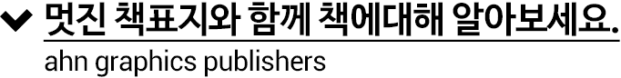
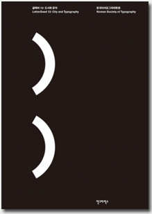

글짜씨 12: 도시와 문자
LetterSeed 12: City and Typography
지은이 한국타이포그라피학회발행일 2015년 12월 31일ISBN 9788970598420사양 페이퍼백 171*240 361쪽가격 30,000원분야 타이포그래피
다른책 보기
페이스북 보기
소개
[타이포잔치 2015]를 돌아보다
한국타이포그라피학회는 글자와 타이포그래피를 연구하기 위해 2008년 창립되었다. [글짜씨]는 한국타이포그라피학회에서 2009년 12월부터 발간한 국제 타이포그래피 저널이다. [글짜씨 12: 도시와 문자]에서는 작년 12월 막을 내린 [타이포잔치 2015]를 돌아본다.